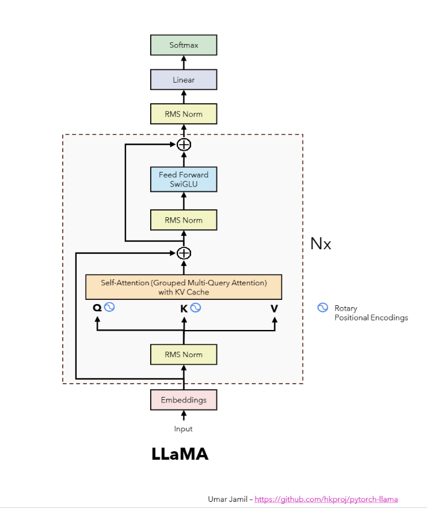
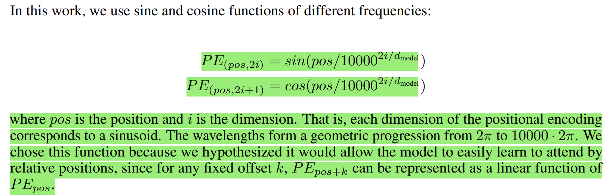
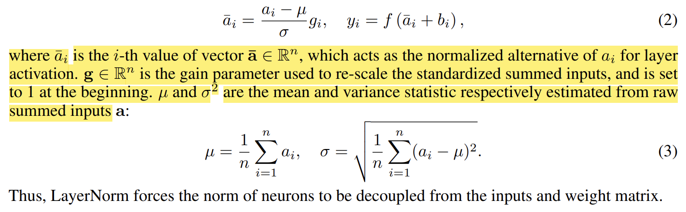
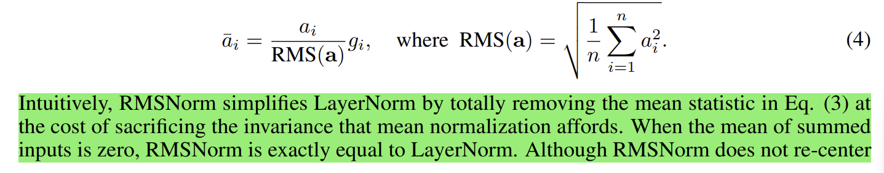
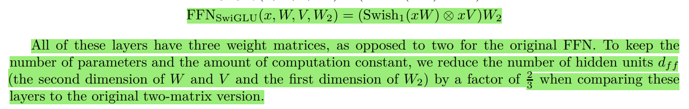
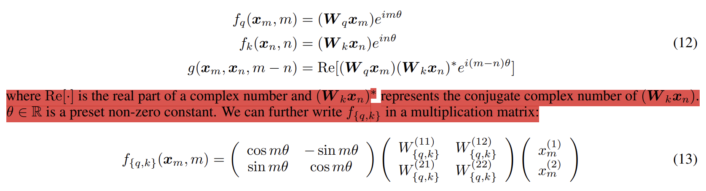
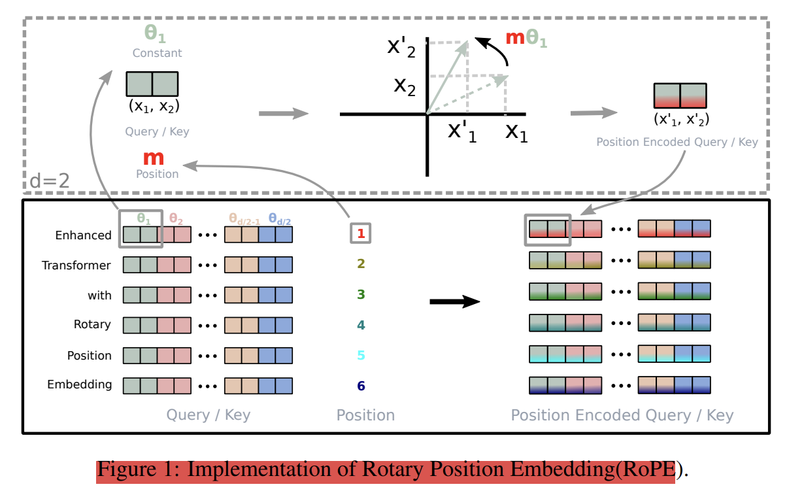

In this article, I will be sharing the notes and concepts which I have learned while reading the papers and while discussing with Umar. The ultimate goal that I have on my mind is to build Llama 2 from scratch.
 Figure 1: The Llama2 architecture prepared by Umar Jamil.
The Attention Is All You Need is the first paper that I read on this journey. This paper introduces the Transformer architecture, which is the architecture used in Llama.
Why was the Transformer architecture introduced?
The Transformer architecture was introduced to resolve the issues on Recurrent Neural Networks (RNNs). RNNs are sequential in nature, which means that the hidden state of a token depends on the hidden state of the previous token in the sequence. This makes RNNs not parallelizable. RNNs are not suitable for capturing long-range dependencies in a sequence. The Transformer architecture is parallelizable because it uses the attention mechanism to capture the relationships between tokens in a sequence. Since, we use dot products to calculate the attention, we can parallelize the calculations of the attention.
I have an article that explains the fundamentals terms and concepts of the Transformer architecture. You can read it here.
Why do we need Positional Encodings? Which component of the Transformer architecture uses positional encodings?
In the transformer architecture, we convert the tokens in a sequence to embedding vectors. The embedding vectors (encoded with position inforamtion) are then fed to the encoder and decoder. The encoder block contains multi-head attention and feed-forward layers. The decoder block contains masked multi-head attention, multi-head attention and feed-forward layers. The embedding vectors does not contain any information about the position of the tokens in the sequence. The learned positional encodings are added to the embedding vectors to give information about the position of the tokens in the sequence. The positional encodings are added to the embedding vectors before they are fed to the encoder and decoder blocks. If we do not add positional encodings to the embedding vectors, each unique token will have the same embedding vector irrespective of its position in the sequence.
 Figure 2: Positional Encodings
The attention mechanism is used to capture the relationships between tokens in a sequence so that, the position encodings are used by the self-attention layer of the transformer architecture.
Why the multi-head attention in decoder block of the Transformer architecture is called cross-attention?
The multi-head attention in the decoder block of the Transformer architecture is called cross-attention because it uses the encoder output only as the key and value vectors. The query vectors are the output of the masked multi-head attention layer of the decoder block. The masked multi-head attention layer is used to prevent the decoder from attending to future tokens in the sequence. The cross-attention layer is used to capture the relationships between the tokens in the input sequence and the tokens in the output sequence.
In the Transformer architecture, the length of queries, keys, and values vectors are not always same but the embedding dimension should always same becuase we use dot product to calculate the attention. But the length of keys and values vectors are always same.
Then, I read the Root Mean Square Layer Normalization because RMSNorm normalizing function was used in Llama architecture.
What is the difference between LayerNorm and RMSNorm?
LayerNorm is the normalization technique that is used in the Transformer architecture which stabilizes the training of any neural networks by regularizing neuron dynamics via mean and variance statistics. The vanilla neural networks might suffer from internal covariate shift problem, where a layer’s input distribution changes as the previous layers are updated. This could negatively affect the stability of parameters gradient calculation delaying model convergence. To reduce this shift, LayerNorm normalizes the summed inputs so as to fix their mean and variance to 0 and 1 respectively.
 Figure 3: Layer Normalization & Root Mean Square Normalization
LayerNorm has re-centering and re-scaling invariance properties where the former property enables the model to be insensitive to shift noises on both inputs and weights, and the latter property keeps the output representations intact when both the inputs and weights are randomly scaled. RMSNorm only focuses on re-scaling invariance and regularizes the summed inputs simply by Root Mean Square (RMS) statistics.

Since, RMSNorm doesn’t require the calculation of mean static, it is computationally efficient and accelerates the running speed.
After that, I read the GLU Variants Improve Transformer because the Llama architecture replace the ReLU non-linearity from FeedForward block with SwiGLU activation function to improve the performance.
In the Transformer architecture, there are two layers: multi-head attention and position-wise feedforward networks (FFN). The FFN takes a vector x which is the hidden representation at a particular position in the sequence and passes it through two learned linear transformmations with a non-linear activation function in between.
The Llama architecture uses SwiGLU activation function instead of ReLU activation function in the FFN block. SwiGLU is a variant of GLU activation function that uses 3 matrices and has no computational overhead.
 Figure 4: SwiGLU activation function
After that, I read the RoFormer: Enhanced Transformer with Rotary Position Embedding because the Llama architecture uses Rotary Position Embedding (RoPE) to encode the positional information to the attention mechanism instead of using the learned absolute positional encodings as done in the original Transformer architecture.
Rotary Position Embedding (RoPE)
Rotary Position Embedding encodes the absolute position with the rotation matrix and naturally incorporates the explicit relative position dependency into the self-attention mechanism. After we multiply the input embedding with parameterized matrices, the two embedding vectors which correspond to query and key is converted into a complex number representation. Then, the complex number is represented as a multiplication matrix which will contain the rotation matrix and weight matrices. The rotation matrix is used to encode the absolute position information because the degree of rotation is proportional to the position of the token in the sequence. Then we calculate the inner product of the rotated query and key vectors to calculate the attention scores which incorporates the relative position information and the inner product of query and key embedding vectors only depends on the distance between them.
 Figure 5: Multiplication Matrix of RoPE
Rotary Position Embedding uses a rotation matrix to encode positional information to the attention rather than adding absolute position encoding vectors to the queries and keys as done in relative positional embedding which resolves the essence of extra computation as well. RoPE uses the concept of complex numbers and Euler’s formula to encode positional information to the attention mechanism.
 Figure 6: Rotary Position Embedding
Absolute Positional Encodings Vs Relative Positional Encodings - Absolute positional encodings are fixed vectors that are added to the embedding vectors of a token to represent its absolute position in the sentence. So, it deals with one token at a time. You can think of it as the pair (lantitue, longitude) on a map: each point on earth has a unique pair of coordinates. - Relative positional encodings, on the other hand, deals with two tokens at a time and it is involved when we calculate the attention: since the attention mechanism captures the “intensity” of how two words are related to each other, relative postional encodings tell the attention mechanism the distance between two words involved in it. So, give two tokens, we create a vector that represents the distance between them. Relative positional encodings were introduced in the paper “Self-Attention with Relative Position Representations” by Shaw et al. (2018)“.